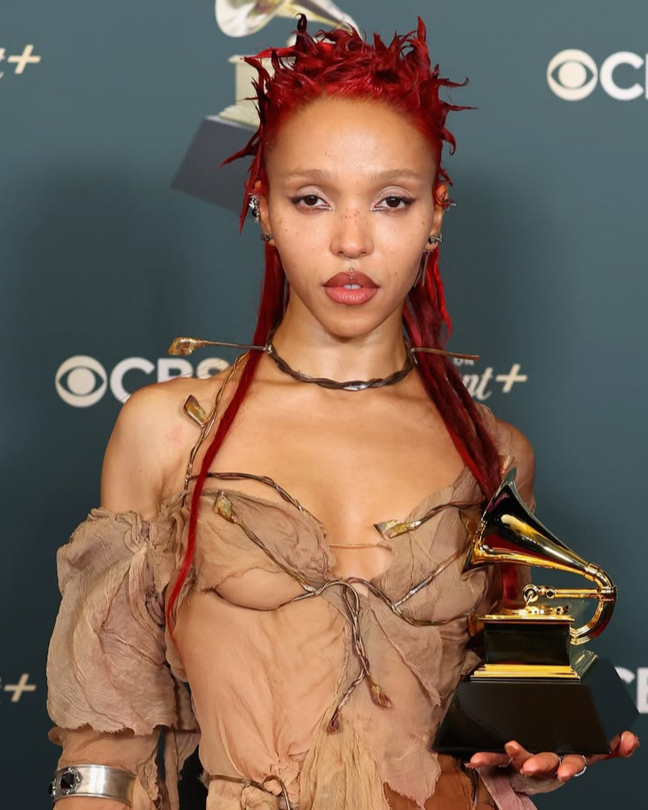

Tahliah Debrett Barnett (nacida el 17 de enero de 1988), conocida profesionalmente como FKA Twigs, es una cantante, compositora, productora discográfica, actriz y bailarina inglesa. Fue bailarina de apoyo de numerosos músicos e hizo su debut musical con el EP1 (2012). El álbum de estudio debut de Barnett, LP1 (2014), alcanzó el puesto número 16 en la lista de álbumes del Reino Unido y el número 30 en la lista Billboard 200 de Estados Unidos . Fue nominado al Premio Mercury de ese año . Posteriormente lanzó el EP M3LL155X (2015).
Barnett se tomó un descanso de cuatro años antes de lanzar su segundo álbum de estudio, Magdalene (2019). Después de firmar con Atlantic Records , lanzó el mixtape Caprisongs (2022). Sus tercer y cuarto álbumes de estudio, Eusexua y Eusexua Afterglow , fueron lanzados en 2025. En la 68.ª edición de los Premios Grammy , Eusexua recibió el premio al Mejor Álbum de Música Dance/Electrónica . Su trabajo ha cosechado elogios de la crítica y ha sido descrito como "que fusiona géneros", aprovechándose de varios géneros que incluyen música electrónica , trip hop , R&B , hyperpop y la vanguardia.